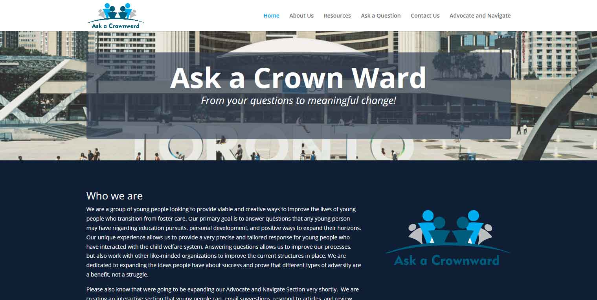
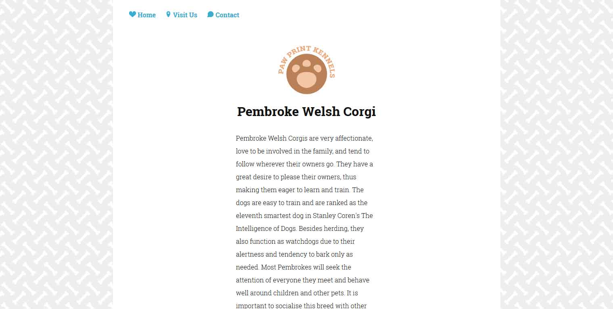
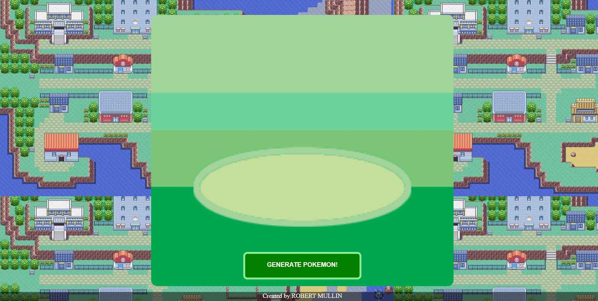
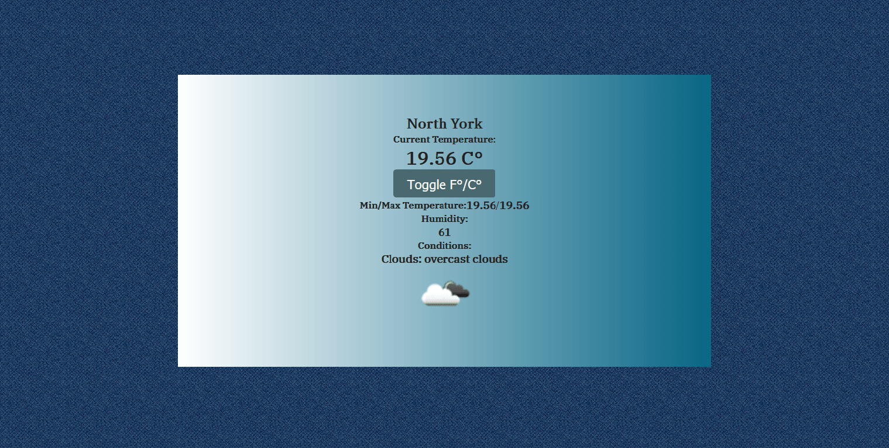
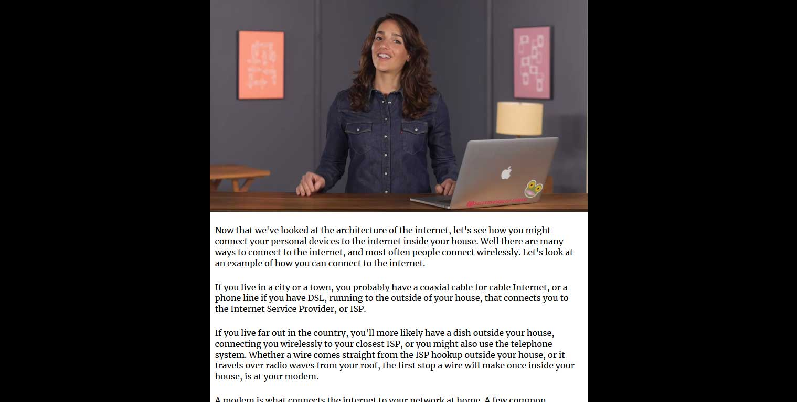
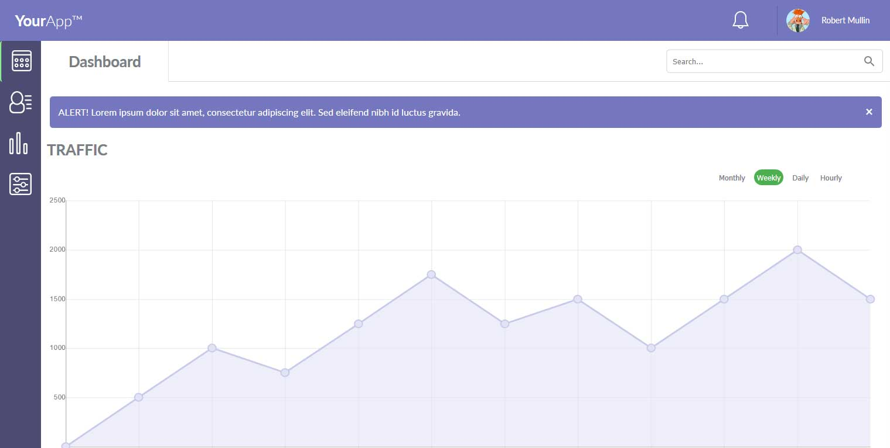

Web
WordPress site to connect youth transitioning from foster care to people who can answer questions that they may have regarding education pursuits, personal development, and positive ways to expand their horizons. Integrated a custom WordPress theme and created a custom color scheme.
Built a website with basic information about the dog breed Corgi. Used SVG images and basic CSS animation to keep things interactive but lightweight. Used knowledge of HTML5, CSS3 and a solid understanding of SVGs.
Built a fun little random Pokemon generator with HTML5, CSS3 and JS/Jquery for connecting to a Pokemon API. Used knowledge of APIs to build a ground up interface for easily calling random Pokemon with their name and picture.
Built a local weather website. Basic site built with HTML5 and CSS3 and using jQuery/JavaScript for using a geolocation API to connect to the OpenWeatherAPI and pull the local weather information to the user's location.
A custom JavaScript video player that also tracks the dialogue in real time. Built with HTML5, CSS3 and JavaScript.
A responsive social media concept page that utilized JavaScript graphs and responsive images and alerts. Built with HTML5, CSS3 and JavaScript.
Bio
Web development professional with proven expertise in HTML5, CSS3, PHP, JavaScript and WordPress. Hands on experience in building website for individuals and larger organizations. Quickly able to adapt to solve problems unique to the requirements of the site. Recognized skills in problem solving, managing people, critical thinking and working in a team environment.
A successful independent web developer since early 2015 and learning something new about web development every single day.
Testimonials
Contact
Please get in touch if you need anything done related to your website or if you need a new website. I respond to email very quickly but if you would prefer a phone call leave your number in the body of your message.
Contact Me